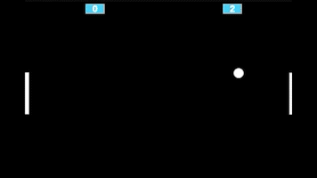

Pong Game
Este projeto é uma recriação do clássico jogo de Pong, releitura do tênis de mesa. Em seu desenvolvimento foram utilizados conceitos simplificados de JavaScript.
Clique aqui para jogar!

Freeway
Já neste projeto, foi recriado outro jogo clássico, o Freeway, utilizando conceitos fundamentais de JavaScript com um pouco mais de complexidade que o anterior.